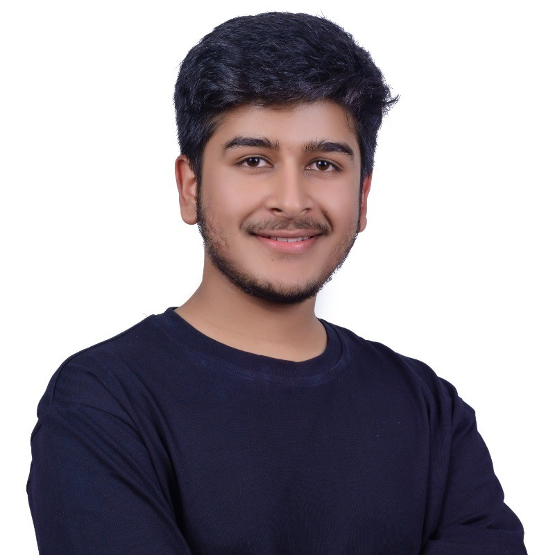

Nirvic Regmi.
I'm driven by the challenge of building systems that think, learn, and scale. From engineering reliable software to developing machine learning models and intelligent agents, I combine analytical thinking with a first-principles mindset and a curiosity to understand how things work, challenge assumptions, and turn ideas into intelligent systems.
I work at the intersection of software engineering and artificial intelligence. From building backend systems and tinkering with machine learning algorithms to experimenting with LLMs, RAG and autonomous agents, I enjoy understanding how things work beneath the surface and turning that understanding into practical systems.
About
I'm driven by a fairly relentless need to understand how things work underneath. That's taken me from shipping web and mobile products to spending my evenings retraining the same small model until it stops being dumb in a new way.
Lately that means PyTorch more than anything else — building out model training pipelines, RAG systems, and agents that actually hold up a potential.
Most of what I'm chasing, in code and otherwise, is compression — the smallest model that still explains the mess. A model that's only memorized the data hasn't understood anything. Neither have I, usually, until I can say it simply.

Toolkit
What I reach for most often:
Expertise
Software & backend engineering
Designing and building scalable backend systems, REST APIs, database architectures, and distributed services. Focused on clean architecture, reliability, and solving problems beyond the application layer.
AI & intelligent systems
Building practical AI applications with LLMs, RAG pipelines, vector databases, and tool-using agents. Exploring local inference, model integration, and intelligent automation.
Machine learning & deep learning
Deep dive into machine learning, neural networks, and sequence models. Constantly building models from scratch to understand how learning actually works.
Selected work
ServeNepal
A governance platform bridging citizens and district administrators — reporting, status tracking, and analytics in one place.
Podcast Scraper
An automated feed scraper with subscriptions, minute-level updates, and full-text search over the archive.
Meeting Summarizer
An AI meeting assistant that transcribes video, pulls out action items, and writes a summary worth actually reading.
Contact
Feel free to reach out for collaborations, or just to talk shop about agents and training runs.